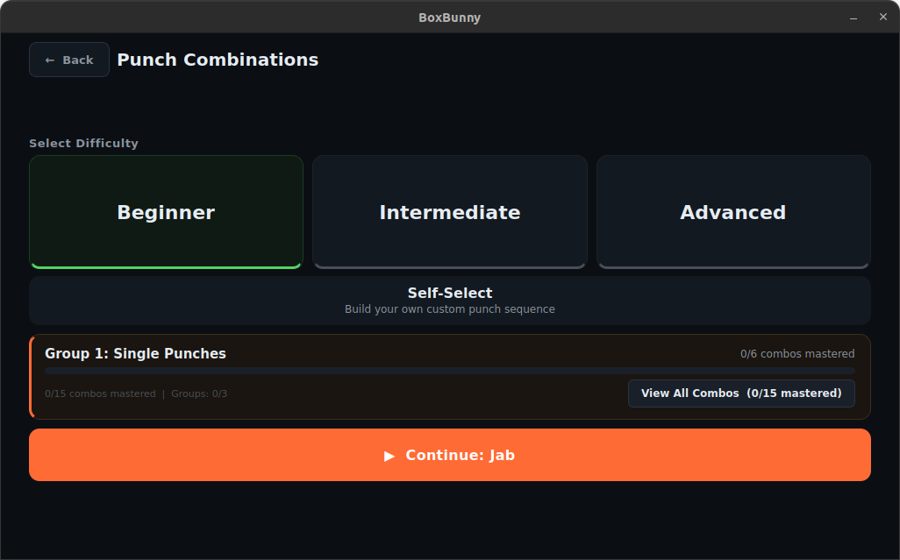
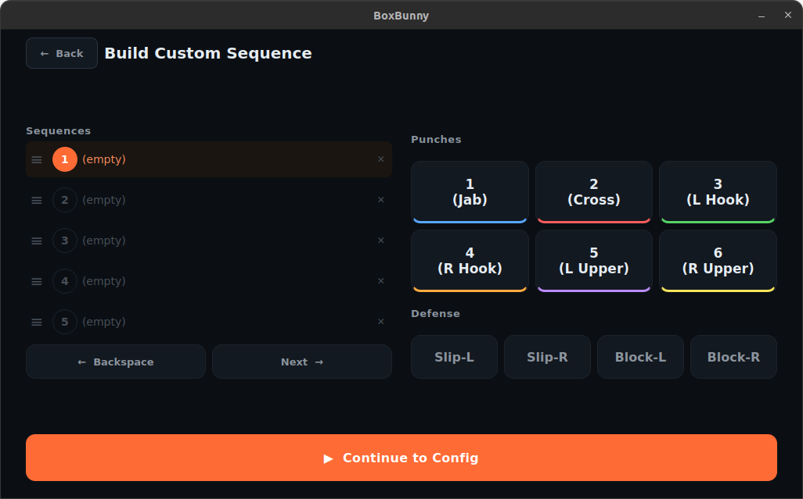
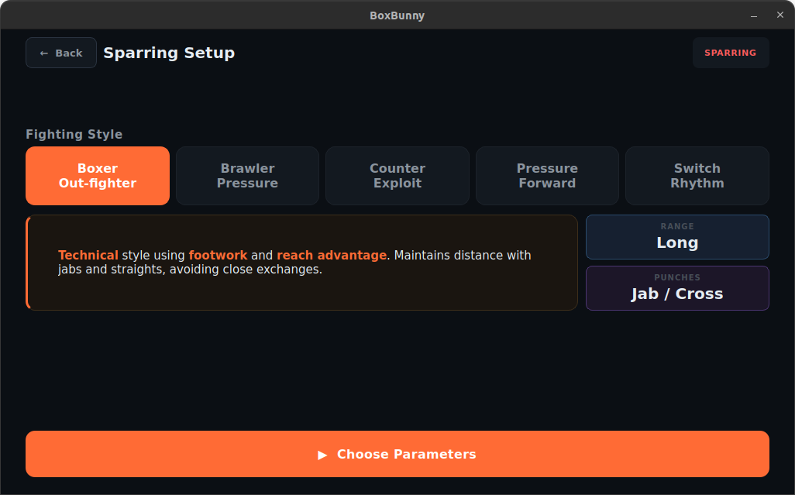
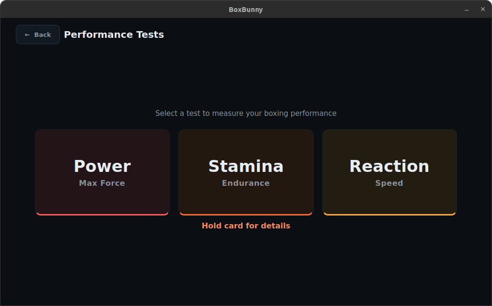
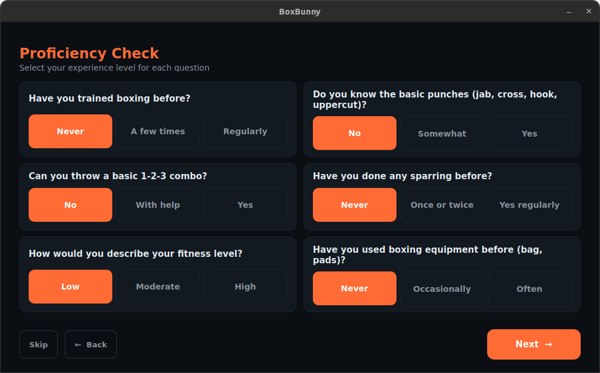
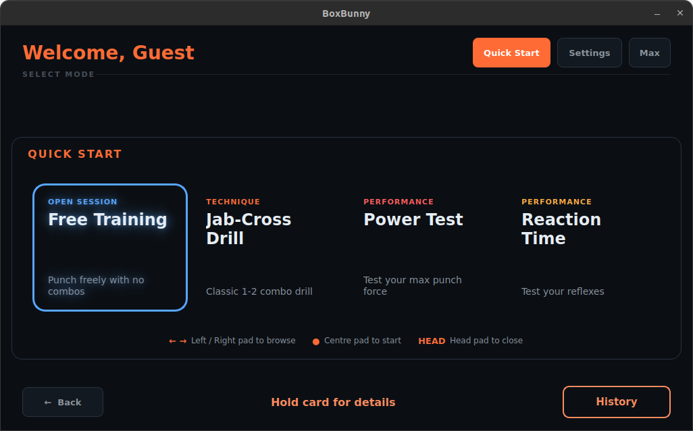
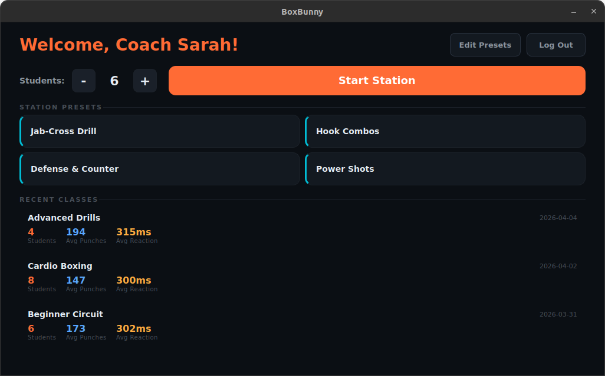
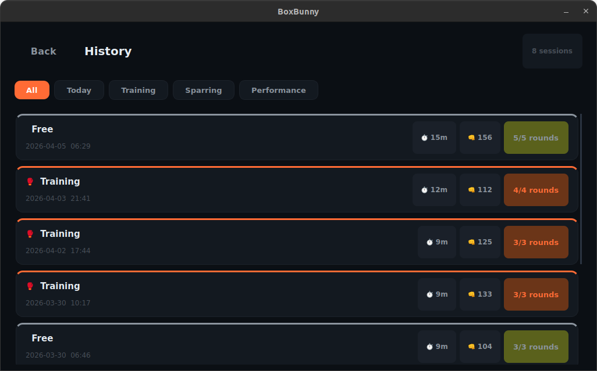
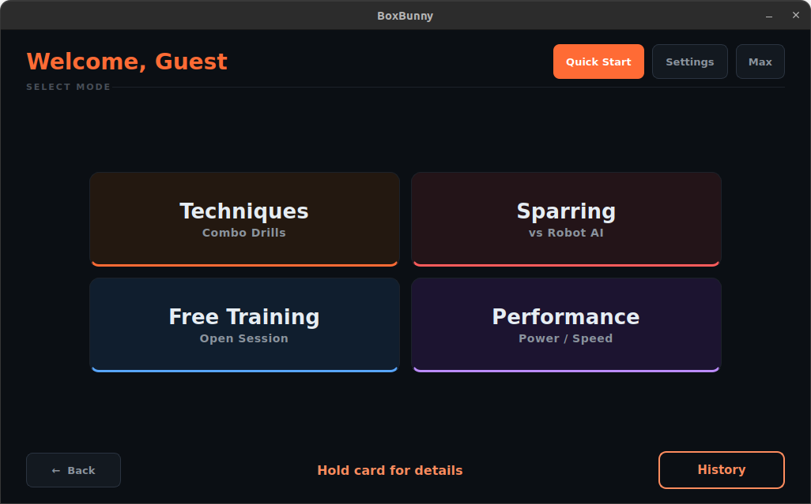

Appendix 3: GUI Interface Screenshots
This appendix presents detailed screenshots of the BoxBunny GUI across all major features and training modes. Each screenshot captures the interface as rendered on the 10.1-inch touchscreen display (1280x800).
Training Modes

Technique Drills
Difficulty tier selection for the 50-combo curriculum. Users choose from Beginner (15 combos), Intermediate (20 combos), Advanced (15 combos), or Self-Select to create custom sequences.

Self-Select Sequence Builder
Custom punch sequence creation interface. The left panel shows the current sequence list, the right panel provides numpad-style buttons for punch types (1-6) and defensive movements, and the bottom bar confirms the selection.

Sparring Mode
AI opponent style selection. Five styles are available: Boxer, Brawler, Counter-Puncher, Pressure, and Switch. The description panel shows punch type distribution and behavioral characteristics for each style.

Performance Tests
Three standalone assessment modes: Power (peak punch force via IMU), Stamina (2-minute endurance with fatigue tracking), and Reaction Time (CV-based response measurement with tier classification).
User Management and Onboarding

Proficiency Assessment
Six-question assessment presented during signup to determine the user's initial skill level. Responses are scored and mapped to Beginner, Intermediate, or Advanced, which sets the default combo difficulty tier.

Quick Start Presets
Saved training configurations for one-tap session launch. Each preset stores the training mode, difficulty, round count, work/rest timers, and speed. Users can create, edit, and delete presets from the settings page.
Coaching and AI Features

Coach Station
Group circuit training dashboard. The coach sets participant count (up to 30), selects a station preset, and manages the rotation. Recent session history is shown at the bottom for quick reference.

AI Coaching Chat
Post-session AI feedback interface. The chat area displays coaching analysis at the top. Advanced settings at the bottom expose model configuration (temperature, max tokens, context window, threads) for development and tuning purposes.
Analytics and History

Session History
Unified history interface consolidating all training types. Users can filter by mode (combo drills, sparring, performance tests) and view per-session details including scores, punch counts, and trend indicators.

Homepage
Main landing page after login. Four training categories are presented as large touch-friendly cards: Techniques, Sparring, Free Training, and Performance. Quick Start and Settings are accessible from the top bar.